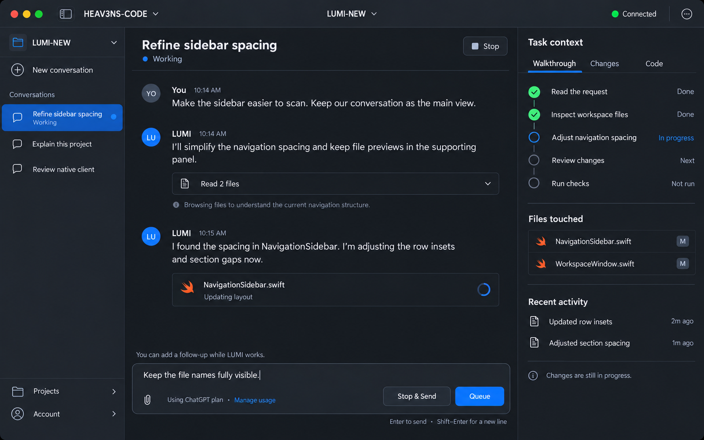

Follow the agent’s work
Stay in the conversation while a clear walkthrough shows what is happening.

Prototype only. Continue below or use Show hotspots to explore the image.
Flow intent
The center carries intent, updates, and follow-up instructions. The right panel shows observable steps, touched files, and recent changes.
Design boundary
This direction was selected for native implementation. These images remain simulated concepts. See the Swift/AppKit implementation record for working behavior and verification.
Recovery paths and implementation notes
These supplementary states explain recovery; thirteen full-size generated screens show the main journey. Only marked hotspots and gallery controls are interactive. Tabs preview example states; they do not control a live task.
Chat is the main workspace. Files and Outline live in the right Code panel. File paths, code, timestamps, and task content are illustrative, not exact source captures. Browsing changes inspection and does not silently attach model context. The walkthrough shows observable activity rather than hidden reasoning. Completion, checks, and human review remain distinct.
Pattern references: VS Code file and symbol clarity, Xcode project navigation, and OpenAI browser sign-in. This study borrows navigation details while keeping conversation central.